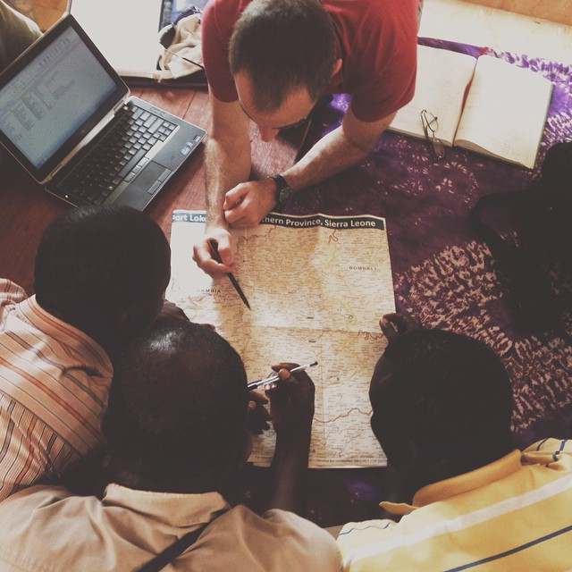

Public Health Information among Crisis-Affected Populations
Jonathan Polonsky
2016-09-30
Preface

This is a sample book written in Markdown. You can use anything that Pandoc’s Markdown supports, e.g., a math equation \(a^2 + b^2 = c^2\).
For now, you have to install the development versions of bookdown from Github:
devtools::install_github("rstudio/bookdown")Remember each Rmd file contains one and only one chapter, and a chapter is defined by the first-level heading #.
To compile this example to PDF, you need to install XeLaTeX.
Why read this book
Can we write a book in one source format, and generate the output to multiple formats? Traditionally books are often written with LaTeX or Microsoft Word. Either of these tools will make writing books a one-way trip and you cannot turn back: if you choose LaTeX, you typically end up only with a PDF document; if you work with Word, you are likely to have to stay in Word forever, and may also miss the many useful features and beautiful PDF output from LaTeX.
Can we focus on writing the content without worrying too much about typesetting? There seems a natural contradiction between content and appearance, and we always have to balance our time spent on these two aspects. No one can have a cake and eat it, but it does not mean we cannot have a half and eat a half. We want our book to look reasonably pretty, and we also want to focus on the content. One possibility is to give up PDF temporarily, and what you may have in return is a pretty preview of your book as HTML web pages. LaTeX is an excellent typesetting tool, but you can be easily buried in the numerous LaTeX commands and typesetting details while you are working on the book. It is just so hard to refrain from previewing the book in PDF, and unfortunately also so common to find certain words exceed the page margin, certain figures float to a random page, five or six stray words at the very end of a chapter proudly take up a whole new page, and so on. If the book is to be printed, we will have to deal with these issues eventually, but it is not worth being distracted over and over again while you are writing book. The fact that the Markdown syntax is simpler and has fewer features than LaTeX also helps you focus on the content. Do you really have to define a new command like \myprecious{} that applies \textbf{\textit{\textsf{}}} to your text? Does the letter “R” have to be enclosed in \proglang{} when readers can easily figure out it stands for the R language? It does not make much difference if everything, or nothing, needs the reader’s attention.
Can readers interact with examples in our book as they read it? The answer is certainly no if the book is printed on paper, but it is possible if your book has an HTML version that contains live examples, such as Shiny applications (https://shiny.rstudio.com) or HTML widgets (https://htmlwidgets.org). For example, readers may immediately know what happens if they change certain parameters of a statistical model.
Can we get feedback and even contributions from readers as we develop the book? Traditionally the editor will find a small number of anonymous reviewers to review your book. Reviewers are often helpful, but you may still miss the wisdom of more representative readers. It is too late after the first edition is printed, and readers may need to wait for a few years before the second edition is ready. There are some web platforms that make it easy for people to provide feedback and contribute to your projects, and GitHub (https://github.com) is one prominent example. If anyone finds a typo in your book, he/she can simply correct it online and submit the change back to you for your approval. It is a matter of clicking a button to merge the change, with no questions asked or emails back and forth. To be able to use these platforms, you need to learn the basics of version control tools like GIT, and your book source files should be in plain text.
The combination of R (https://www.r-project.org), Markdown, and Pandoc (http://pandoc.org) makes it possible to go from one simple source format (R Markdown) to multiple possible output formats (PDF, HTML, EPUB, and Word, etc). The bookdown package is based on R Markdown, and provides output formats for books and long-form articles, including the GitBook format , which is a multi-page HTML output format with a useful and beautiful user interface. It is much easier to typeset in HTML than LaTeX, so you can always preview your book in HTML, and work on PDF after the content is mostly done. Live examples can be easily embedded in HTML, which can make the book more attractive and useful. R Markdown is a plain text format, so you can also enjoy the benefits of version control, such as collaborating on GitHub. We have also tried hard to port some important features from LaTeX to HTML and other output formats, such as figure/table numbering and cross-references.
In short, you just prepare a few R Markdown book chapters, and bookdown can help you turn them into a beautiful book.
Acknowledgments
First I’d like to thank my employer, RStudio, for providing me the opportunity to work on this exciting project. I was hoping to work on it when I first saw the GitBook project in 2013, because I immediately realized it was a beautiful book style and there was a lot more power we could add to it, judging from my experience of writing the knitr book (Xie 2015) and reading other books. R Markdown became mature after two years, and luckily, bookdown became my official job in late 2015. There are not many things in the world better than the fact that your job happens to be your hobby (or vice versa). I totally enjoyed messing around JavaScript libraries, LaTeX packages, and endless regular expressions in R. Honestly I should also thank StackOverflow (http://stackoverflow.com), and I believe you all know what I mean, if you have ever written any program code.
This project is certainly not a single person’s effort. Several colleagues at RStudio have helped me along the way. Hadley Wickham provided a huge amount of feedback during the development of bookdown, as he was working on his book “R for Data Science” with Garrett Grolemund. JJ Allaire and Jonathan McPherson provided a lot of technical help directly to this package as well as support in the RStudio IDE. Jeff Allen, Chaita Chaudhari, and the RStudio Connect team have been maintaining the https://bookdown.org website. Robby Shaver designed a nice cover image for this book. Tareef Kawaf tried his best to help me grow to a professional software engineer. It is such a blessing to work in this company with enthusiastic and smart people. I remember once I told Jonathan “hey I found a problem in caching HTML widgets dependencies and finally figured out a possible solution”, and Jonathan grabbed his beer, “I already solved it.” “Oh nice, nice.”
I also received a lot of feedback from book authors outside RStudio, including Jan de Leeuw, Jenny Bryan, Dean Attali, Rafael Irizarry, Michael Love, Roger Peng, Andrew Clark, and so on. Some users also contributed code to the project and helped revise the book. Here is a list of all contributors: https://github.com/rstudio/bookdown/graphs/contributors It feels good when you invent a tool and realize you are also the beneficiary of your own tool. As someone who loves the GitHub pull request model, I wished readers did not have to email me there was a typo or obvious mistake in my book, but could just fix it via a pull request. This was made possible in bookdown. You can see how many pull requests on typos I have merged: https://github.com/rstudio/bookdown/pulls It is nice to have so many outsourced careful human spell checkers. It is not that I do not know how to use a real spell checker, but I do not want to do this before the book is finished, and the evil Yihui also wants to leave a few simple tasks to the readers to engage them in improving the book.
The bookdown package is not possible without a few open-source software packages. In particular, Pandoc, GitBook, jQuery, and the dependent R packages, not to mention R itself. I thank the developers of these packages.
I moved to Omaha, Nebraska in 2015, and enjoyed one year with Steeplechase Apartments, where I lived comfortably to develop the bookdown package, thanks to the extremely friendly and helpful staff. Then I met a professional and smart realtor, Kevin Schaben, who found a fabulous home for us in an amazingly short period of time, and I finished this book in our new home.
John Kimmel, the editor from Chapman & Hall/CRC, helped me publish my first book. It is my pleasure to work with him again. He generously agreed to let me keep the online version of this book for free, so I can continue to update it after it is printed and published (i.e., you do not have to wait for years for the second edition to correct mistakes and introduce new features). I wish I could be as open-minded as him when I’m his age. Shashi Kumar solved some of my technical issues with the publisher’s LaTeX class (krantz.cls) when I was trying to integrate it with bookdown.
Lastly I want to thank my family, in particular, my wife and son, for their support. The one-year-old has discovered that my monitor will light up when he touches my keyboard, so occasionally he just creeps into my office and presses randomly on the keyboard. I’m not sure if this counts as his contribution to the book… @)!%)&@*
Jonathan Polonsky
References
Xie, Yihui. 2015. Dynamic Documents with R and Knitr. 2nd ed. Boca Raton, Florida: Chapman; Hall/CRC. http://yihui.name/knitr/.